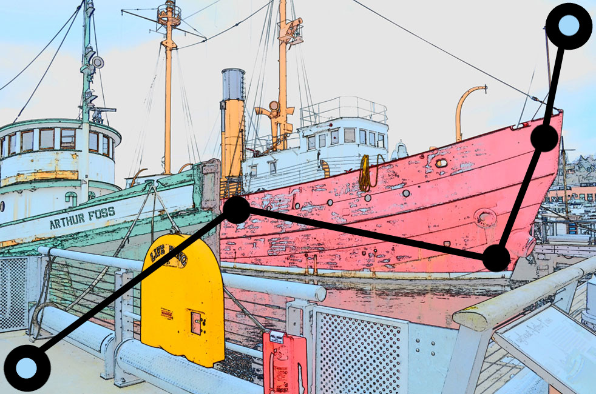

Chromophile
Stage Select
How to Play

Mark three points in the image so as the line joining the two diagonally opposite points, passing through the three points, suffer minimum deviation from the dominant color.
Got it ! Start !